Habitat loss and biodiversity decline
Soil erosion and land degradation
Water pollution and scarcity
Deforestation and vegetation damage
Disrupted ecosystems and climate stress
Disease outbreaks and injury risks
Displacement and housing loss
Livelihood disruption and danger
Shortages and supply chain failure
Community strain and economic stress
The Environmental and Human Impacts of Natural Disasters in Myanmar
Floods, Landslides, Earthquakes, and Droughts
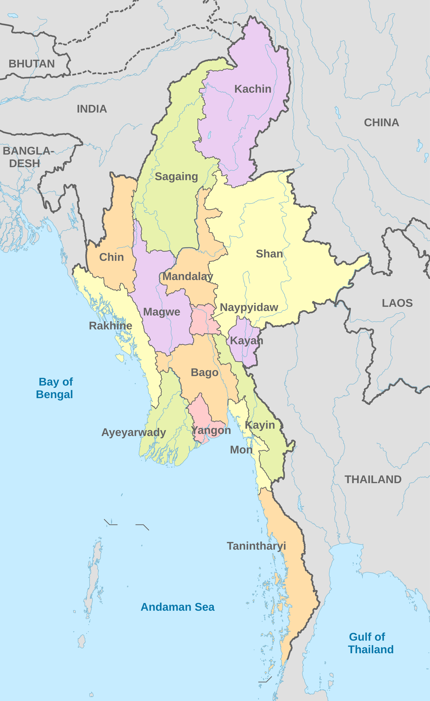
Click a colored dot to explore a region.
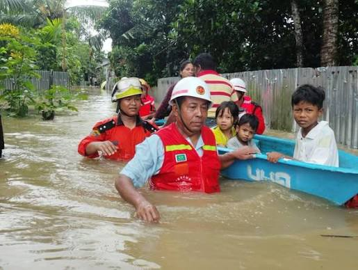
Kachin State has experienced several natural disasters, particularly floods and landslides, affecting communities, infrastructure and mining areas. Some major recorded events include:
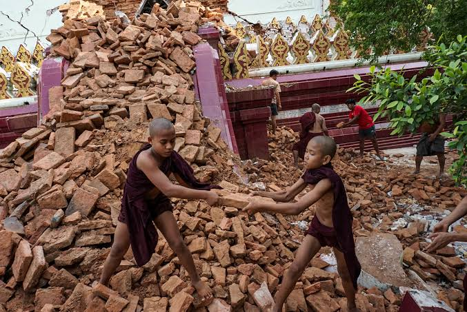
Mandalay has experienced several natural disasters that have affected its communities, infrastructure and environment. Some major recorded events include:
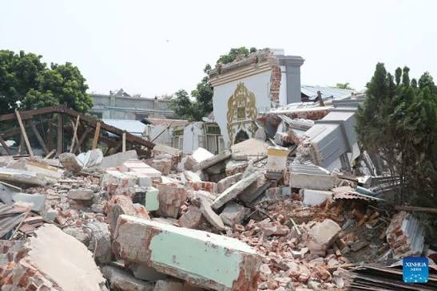
Sagaing has experienced several natural disasters that have affected its communities, infrastructure and environment. Some major recorded events include:
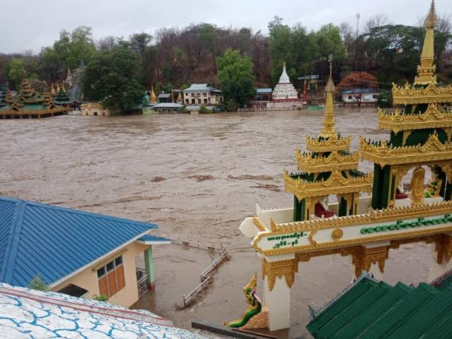
Magway has experienced several natural disasters due to its location in Myanmar's Central Dry Zone and its exposure to heavy monsoon rainfall. These disasters have affected communities, agriculture and infrastructure. Some major recorded events include:
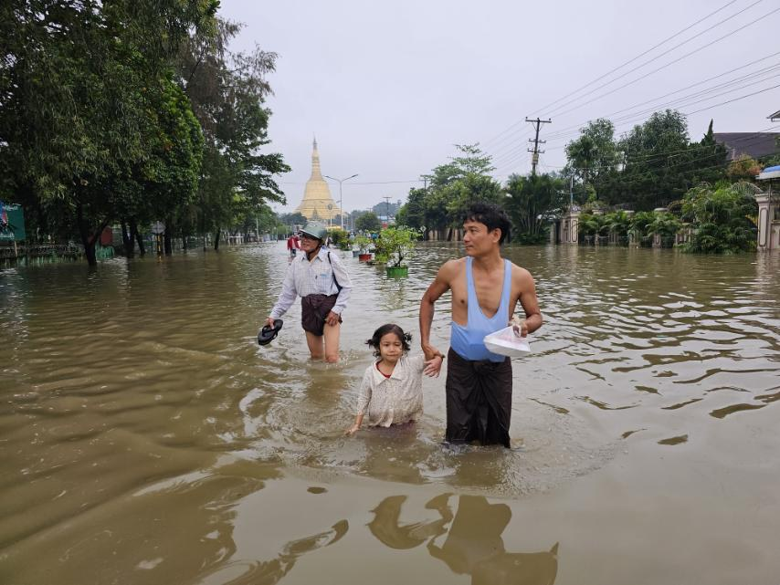
Bago has experienced several natural disasters that have affected its communities, agriculture, infrastructure and environment. Its location along the Sittaung River also makes many areas vulnerable to flooding. Some major recorded events include:
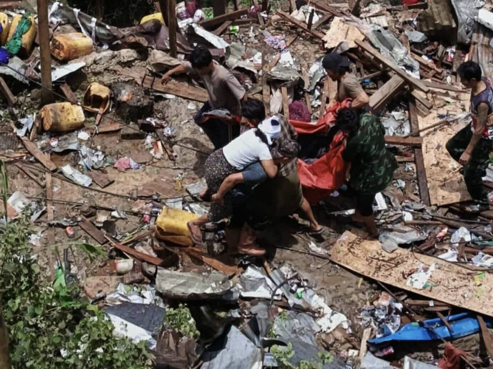
Shan State has experienced several natural disasters due to its mountainous terrain, heavy monsoon rainfall and exposure to seismic activity. These disasters have affected communities, agriculture and infrastructure. Some major recorded events include:
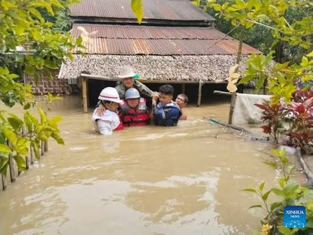
Ayeyarwady Region is located in the low-lying Irrawaddy River Delta. Its coastal and riverside communities are particularly vulnerable to flooding, storm surges and drought-related water shortages. Some major recorded events include:
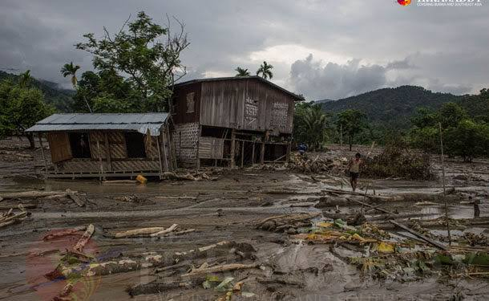
Chin State has experienced several natural disasters due to its mountainous terrain and heavy monsoon rainfall. Landslides, floods and earthquakes have affected its communities, homes, agriculture and transportation infrastructure. Some major recorded events include:
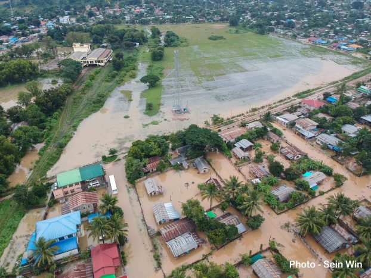
Kayah State has experienced several natural disasters that have affected its communities, agriculture and infrastructure. Heavy monsoon rainfall and overflowing water systems have contributed to serious flooding and landslides. Some major recorded events include:
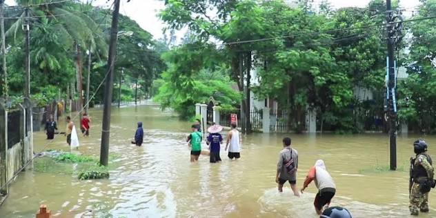
Kayin State has experienced several natural disasters due to its heavy monsoon rainfall, river systems and mountainous terrain. Flooding and landslides have affected communities, transportation routes, homes and agricultural land. Some major recorded events include:
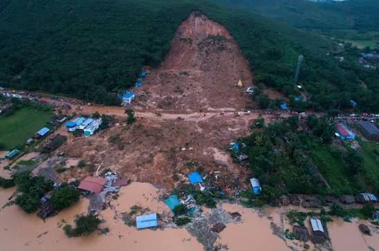
Mon State has experienced several natural disasters due to its coastal location, river systems and mountainous areas. Heavy monsoon rainfall can cause flooding along rivers and landslides in hilly areas, affecting communities, homes and transportation. Some major recorded events include:
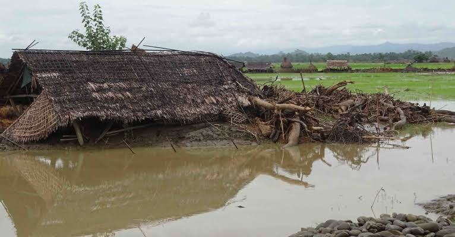
Rakhine State is particularly vulnerable to coastal flooding, storm surges and earthquakes because of its long coastline along the Bay of Bengal. Heavy rainfall and powerful cyclones have also affected coastal communities, homes and infrastructure. Some major recorded events include:
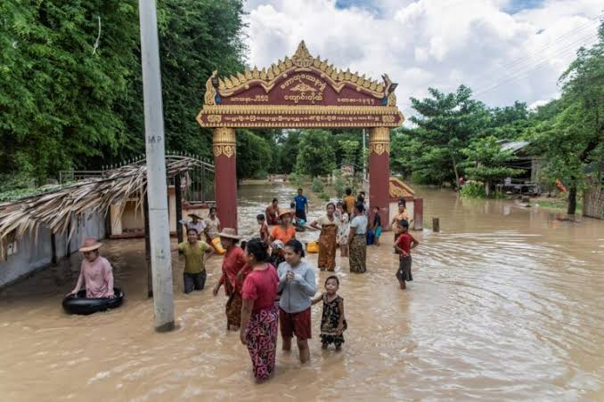
Tanintharyi Region has experienced natural disasters due to its coastal location, mountainous terrain and heavy monsoon rainfall. Rivers can overflow during prolonged rainfall, while steep hillsides are vulnerable to landslides. These disasters have affected communities, roads and livelihoods. Some major recorded events include:
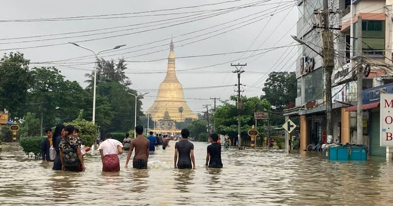
Yangon Region is vulnerable to flooding because of its low-lying location in the Yangon River and delta system. Its dense population and extensive infrastructure can increase the impacts of natural disasters. The region has also experienced damaging historical earthquakes. Some major recorded events include:
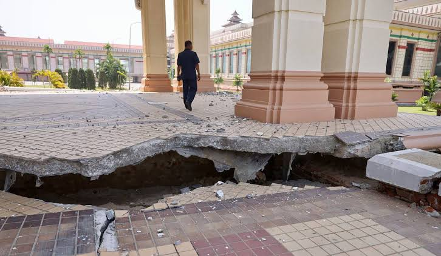
Naypyidaw has experienced natural disasters that have affected its communities, government facilities and infrastructure. Heavy rainfall can cause nearby rivers and creeks to overflow, while earthquakes can damage buildings and essential services. Some major recorded events include: